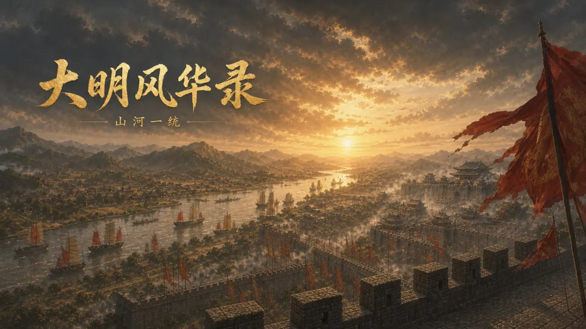
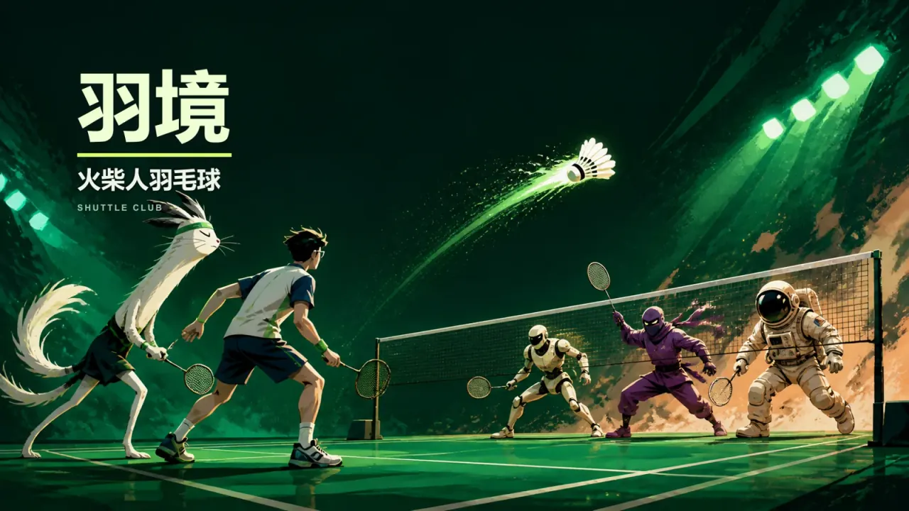
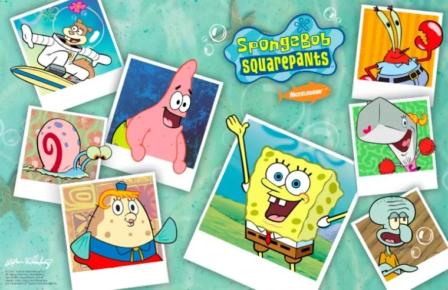
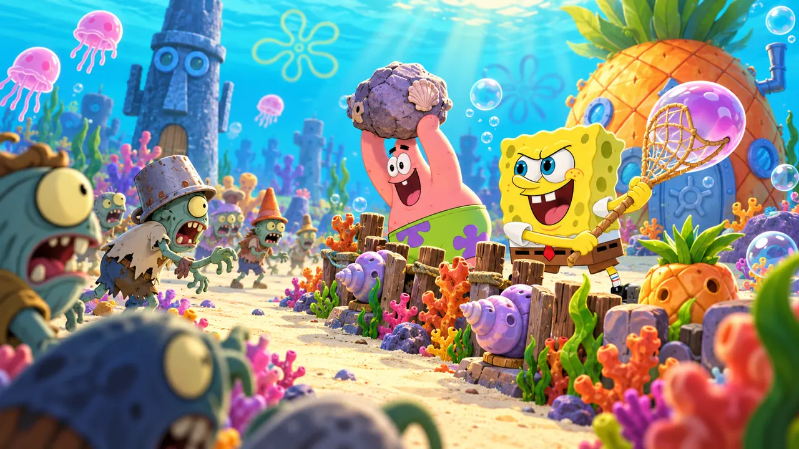
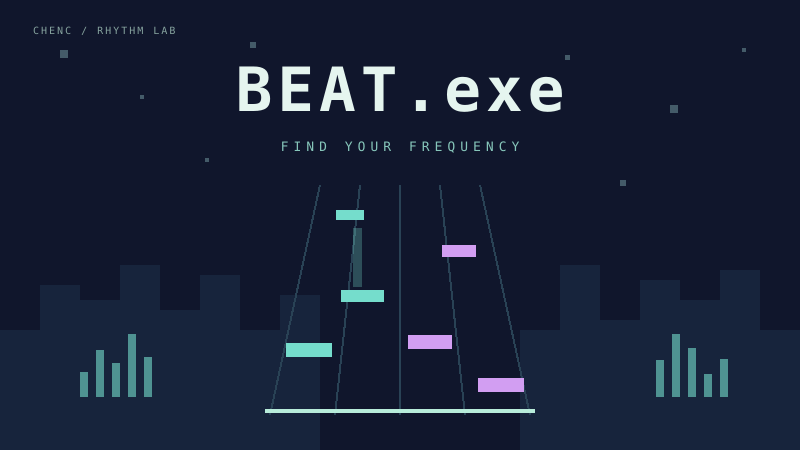

大明风华录 · 山河一统
以你的抉择，书写山河。
从元末明初出发，在单人大战略中统筹钱粮、任命文武、经营辖区与调兵征战。另有靖难与秦篇剧本，体验不同的历史路线。
- 40 个战略辖区
- 建设、科研与调兵
- 历史事件与多剧本
历史疆界与数值为游戏化设计，作品仍在持续完善。
GAMES & PLAY
5 款游戏 · ChenC 的创作
左右滑动，逐个发现

以你的抉择，书写山河。
从元末明初出发，在单人大战略中统筹钱粮、任命文武、经营辖区与调兵征战。另有靖难与秦篇剧本，体验不同的历史路线。
历史疆界与数值为游戏化设计，作品仍在持续完善。

下一拍，轮到你。
在 2D 球场上移动、跳跃、挥拍与扣杀。故事与冒险两种模式，多种角色，支持键盘和触屏按钮。
建议横屏游玩；故事模式包含剧情比分设计。

比奇堡，等你来守护。
本站同人小游戏，抵御不断出现的僵尸鱼，挑战更高分数。可直接打开网页试玩，也提供 Windows 成品下载。
同人小游戏。


跟上节拍，连接你的频率。
四条音轨，八首原创音乐。在点击、长按与滑动之间找准节拍，挑战更高评级，逐步解锁新的曲目与谱面。
建议佩戴耳机；键盘使用 D、F、J、K，手机可直接触控音轨。
从秦开始的历史卡牌策略：每关一个历史事件，用有限的权力、信息与资源做出选择，不同的解法走向不同的结局。
先完成设计，做好后与你见面。
01 / 06 · 大明风华录 · 山河一统